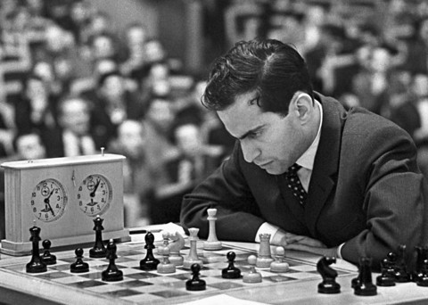
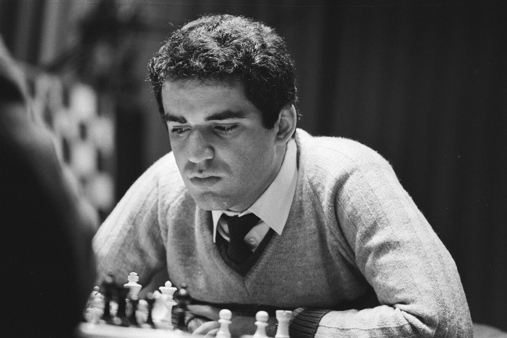
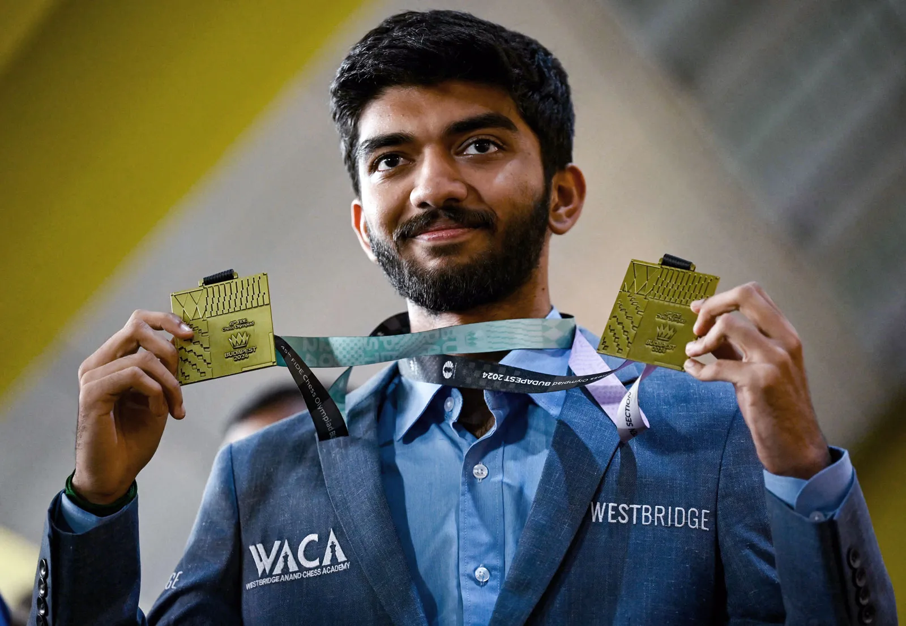
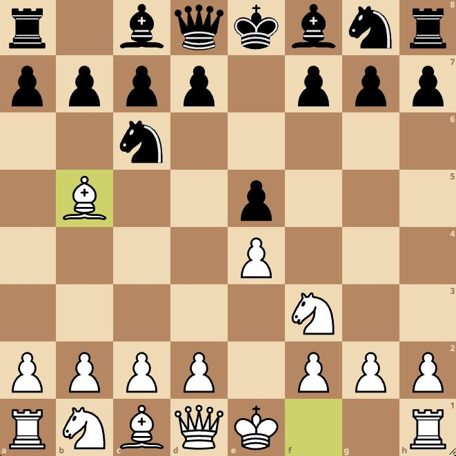
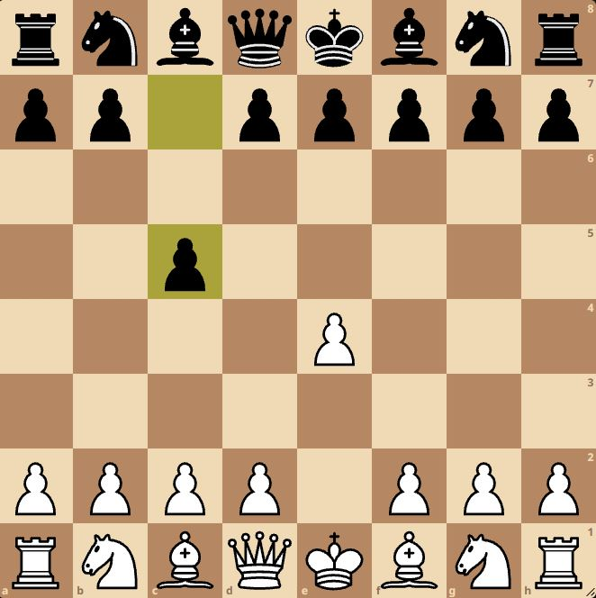
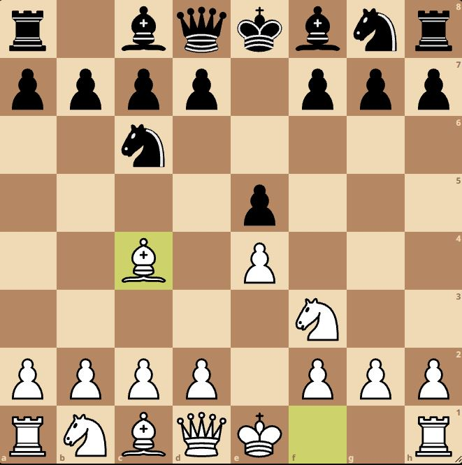
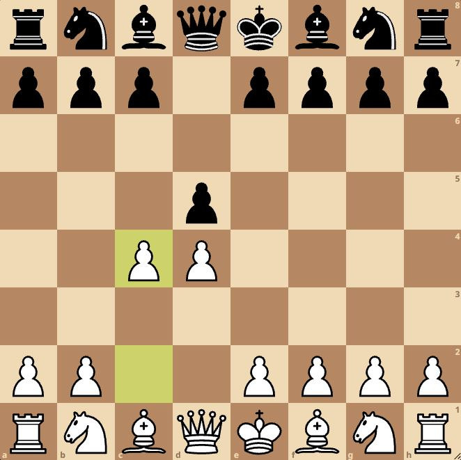

Satranç Nedir?
Satranç, kökeni yaklaşık 1500 yıl öncesine dayanan, dünyanın en eski ve en saygın zeka oyunlarından biridir.
Oyunun bilinen en eski hali 6. yüzyılda Hindistan’da oynanan “Çaturanga” adlı oyundur.
Çaturanga, ordunun dört ana unsurunu temsil eden taşlardan oluşuyordu ve zamanla farklı kültürlere yayılarak gelişti.
Satranç, Hindistan’dan Pers İmparatorluğu’na geçmiş ve burada “Şatranc” adını almıştır.
Araplar aracılığıyla Orta Doğu’ya ve ardından Kuzey Afrika üzerinden Avrupa’ya ulaşmıştır.
Orta Çağ Avrupa’sında satranç, soylular arasında strateji ve zeka göstergesi olarak büyük ilgi görmüştür.
15. yüzyılda oyunun kurallarında önemli değişiklikler yapılmıştır.
Vezirin ve filin daha güçlü hale gelmesiyle satranç, günümüzde oynanan modern formuna yaklaşmıştır.
Bu değişiklikler oyunu daha hızlı ve dinamik hale getirmiştir.
19. yüzyılda ilk resmi satranç turnuvaları düzenlenmiş ve dünya şampiyonluğu kavramı ortaya çıkmıştır.
1886 yılında Wilhelm Steinitz, tarihin ilk resmi Dünya Satranç Şampiyonu olmuştur.
Günümüzde satranç, Uluslararası Satranç Federasyonu (FIDE) tarafından yönetilmekte ve dünya genelinde milyonlarca insan tarafından oynanmaktadır.
Bilgisayarlar ve yapay zekâ sayesinde satranç hem analiz hem de eğitim açısından büyük bir gelişim göstermiştir.
Satranç, sadece bir oyun değil; sabır, planlama ve stratejik düşünmenin simgesi haline gelmiştir.
20. yüzyılın ikinci yarısında Sovyetler Birliği, satrançta büyük bir üstünlük kurmuş ve oyunun teorik gelişimine önemli katkılar sağlamıştır.
Bu dönemde Botvinnik, Kasparov ve Karpov gibi efsane isimler satranç tarihine damga vurmuştur.
Bilgisayarların satranç dünyasına girişiyle birlikte analiz yöntemleri kökten değişmiş, açılış teorileri derinleşmiştir.
Günümüzde çevrim içi platformlar sayesinde satranç her yaştan insan için erişilebilir hale gelmiş ve küresel bir spor kimliği kazanmıştır.
Dijital çağın gelişmesiyle birlikte satranç, sadece turnuva salonlarında değil çevrim içi platformlarda da büyük bir ivme kazanmıştır.
Canlı yayınlar, analiz videoları ve çevrim içi turnuvalar sayesinde satranç, geniş kitlelere ulaşarak popülerliğini artırmıştır.
Bugün satranç; disiplin, sabır ve ileri görüşlülük kazandıran evrensel bir zihin sporu olarak kabul edilmektedir.
Farklı kültürleri ve yaş gruplarını bir araya getiren satranç, rekabetin yanında düşünmeyi ve öğrenmeyi teşvik eden bir oyun olmayı sürdürmektedir.
Ünlü Satranç Oyuncuları
 GM Magnus Carlsen
GM Magnus Carlsen
Magnus Carlsen, modern satranç tarihinin en güçlü oyuncularından biri olarak kabul edilir.
Uzun yıllar dünya şampiyonluğunu elinde tutmuş ve oyuna dinamik bir anlayış kazandırmıştır.

Garry Kasparov
Garry Kasparov, satranç tarihinin en etkili dünya şampiyonlarından biridir.
Agresif oyun tarzı ve derin hazırlıklarıyla satranç teorisine büyük katkılar sağlamıştır.
 GM Anatoly Karpov
GM Anatoly Karpov
Anatoly Karpov, pozisyonel oyun anlayışıyla tanınan efsane bir satranç ustasıdır.
Uzun yıllar dünya şampiyonluğu yapmış ve satranca büyük izler bırakmıştır.
 GM Bobby Fischer
GM Bobby Fischer
Bobby Fischer, satrancı dünya çapında popüler hale getiren önemli isimlerden biridir.
1972 Dünya Şampiyonluğu maçı, satranç tarihinin en unutulmaz karşılaşmalarındandır.
 GM Raúl Capablanca
GM Raúl Capablanca
Capablanca, sade ve hatasız oyun stiliyle tanınan bir dünya şampiyonudur.
Oyun sonlarındaki ustalığı hâlâ eğitim materyali olarak kullanılmaktadır.
Genç Yetenekler

Yağız Kaan, genç yaşına rağmen satrançta gösterdiği gelişimle dikkat çeken Türk yeteneklerden biridir.
Disiplinli çalışması ve turnuvalardaki istikrarlı performansıyla geleceğin umut vadeden oyuncuları arasında gösterilmektedir.

Gukesh D, genç yaşta büyükustalık seviyesine ulaşan önemli bir yetenektir.
Soğukkanlı oyun tarzı ve istikrarlı performansıyla dikkat çekmektedir.
Popüler Satranç Açılışları

İspanyol Açılışı (Ruy Lopez)
İspanyol Açılışı, satranç tarihinin en eski ve en sağlam açılışlarından biridir.
Merkez kontrolü ve uzun vadeli stratejik planlara olanak tanır.

Sicilya Savunması
Sicilya Savunması, siyah taşlarla kazanma şansı yüksek ve dinamik bir açılıştır.
Dengesiz yapısı nedeniyle saldırgan oyuncular tarafından sıkça tercih edilir.

İtalyan Açılışı
İtalyan Açılışı, hızlı gelişim ve merkeze erken baskı kurmayı hedefler.
Yeni başlayanlar ve klasik oyun tarzını sevenler için uygundur.

Vezir Gambiti
Vezir Gambiti, beyaz taşlarla merkez üstünlüğü kurmayı amaçlayan klasik bir açılıştır.
Stratejik ve pozisyonel mücadeleleri seven oyuncular için idealdir.